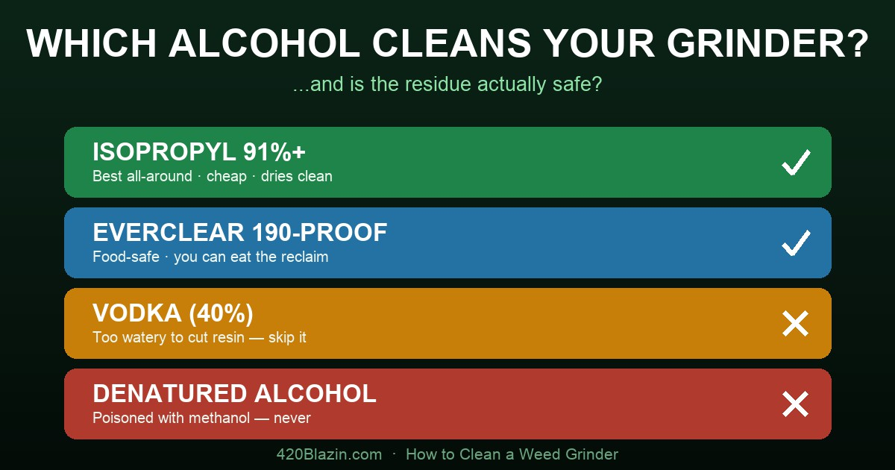

How to Clean a Weed Grinder the Right Way (Without Wrecking It)
By Blazin Bill · Published June 9, 2026 · ~10 min read

Why bother cleaning it at all?
Your grinder is the one tool you touch every single session, and it’s the one most people run into the ground. A gunked-up grinder isn’t just gross — sticky resin builds on the teeth so it grinds unevenly, clogs the screen so you lose kief, grits up the threads so the lid won’t spin, and turns into a little petri dish. Cleaning fixes all of it, and most of the work is a 20-second habit. The deep clean is easy — as long as you don’t destroy your grinder doing it. Which brings us to the part everyone gets wrong.
Rule #1: know your material before you reach for a cleaner
This is the mistake that ruins grinders. The internet shouts “soak it in alcohol!” — great advice for metal, a disaster for plastic and wood. Match the method to what your grinder is actually made of:
| Material | Safe clean | Never do this |
|---|---|---|
| Aluminum / anodized (most metal grinders) | Isopropyl 91%+ soak, soft brush, rinse, dry | Long soaks dull colored anodizing; no acetone, no dishwasher (strips the color) |
| Stainless / titanium | Isopropyl soak — the most durable option | Don’t gouge the teeth with metal picks |
| Acrylic / plastic | Warm soapy water only, soft brush | No alcohol of any kind — it fogs and cracks acrylic |
| Wood | Dry stiff brush; at most a barely damp soapy cloth | Never soak. Alcohol cracks it; standing water warps the threads |
| Electric grinders | Wipe with a damp or alcohol cloth | Never submerge the motor housing |
One line to remember: isopropyl is perfect for metal and poison for plastic and wood. Everything below assumes a metal grinder unless noted.
The big question: isopropyl, vodka, or Everclear?
Here’s the worry that sends people down the rabbit hole: “I’m cleaning a tool that touches the flower I’m about to inhale — is isopropyl residue going to poison me? Should I use drinking alcohol instead?” Fair question. Here’s the real answer.
The truth about isopropyl “residue”
Isopropyl alcohol leaves none of itself behind. It’s volatile — it boils at about 82°C (180°F) and evaporates completely at room temperature. The alcohol molecule deposits nothing. Any film you see after it dries is one of two things: (1) the dissolved resin it just stripped off — which is exactly why the warm-water rinse matters (isopropyl mixes fully with water, so the rinse carries off both the gunk and any last traces of alcohol), or (2) water, if you used a low-percentage product.
That leads to the counterintuitive headline: a higher percentage leaves less residue, not more. Residue is mostly a water problem.
- 70% isopropyl = 30% water — dries slowly (30–60 sec), leaves moisture and mineral spotting.
- 91% isopropyl = ~9% water — dries in 15–30 sec, minimal film. The sweet spot.
- 99% (anhydrous) = under 1% water — flashes off in 5–15 sec with essentially nothing left.
The legitimate kernel behind the worry: un-evaporated isopropyl is genuinely not for drinking (it’s roughly twice as toxic as ethanol). That’s precisely why the rinse-and-fully-dry step exists. Do it and the trace remaining is effectively nil. (Fun fact for the germophobes: 70% is actually the better disinfectant because slower evaporation gives more contact time — but you’re dissolving resin, not sterilizing, so 91%+ wins here.)
So which alcohol should you actually use?
| Cleaner | Strength | Works? | Verdict |
|---|---|---|---|
| Isopropyl 91% | ~9% water | Excellent | 🥇 Best all-around. Cheap (~$0.22/oz), at every pharmacy, dissolves resin fast, dries clean. Metal/glass only. |
| Isopropyl 99% | <1% water | Excellent | Cleanest-drying degreaser. Slightly pricier/harder to find than 91%. |
| Everclear 190-proof | 95% grain ethanol | Excellent | 🥈 The food-safe pick — any trace is just drinking alcohol, and you can evaporate the reclaim and consume it. But ~4× the cost, banned for sale in ~15 states (incl. CA & NY), and extremely flammable. |
| Everclear 151-proof | 75.5% ethanol | Good | Food-safe fallback where 190 is illegal, but ~24% water = slower, wetter. |
| Vodka (80-proof) | 40% / 60% water | Poor | ❌ The classic bad advice. Too watered-down to cut resin, leaves the grinder the wettest. Want food-safe? Use Everclear, not this. |
| Denatured alcohol | Ethanol + poison | Good | ☠️ Never. Deliberately spiked with methanol/Bitrex — toxic on a tool you inhale from. |
Bottom line: stop worrying about isopropyl residue — use 91%+, rinse, and dry fully and you’re safe and it’s cheap. If the worry still nags, or you want to harvest the dissolved “grinder hash” and actually use it, reach for 190-proof Everclear. Just never vodka, and never denatured.
The 80/20: routine maintenance
Most “my grinder is ruined” problems are prevented here, not at the sink:
- Grind dry flower. Wet or super-sticky flower smears trichomes and can gum a grinder in one session. A stem should snap, not bend; if it’s too moist, spread the grind on paper for a few hours first.
- Don’t overpack. Cramming it tight forces resin into the threads and deposits more gunk. Grind smaller loads more often.
- Tap & brush after use. A few taps and a quick brush keep teeth and screen clear. Keep a cheap brush with your kit.
The deep clean, step by step (metal)
- Disassemble completely — every chamber, lid, and the screen.
- Freeze 30–60 minutes. The magic trick: cold makes resin brittle instead of tacky, so it knocks loose easily — and you recover far more kief than scraping at room temperature.
- Tap out the kief over paper before you wet anything. Save it — it’s concentrated trichomes.
- Soak in 91%+ isopropyl (or 190-proof Everclear), 20–30 min (1–2 hours for heavy buildup). Optional: a zip-bag of alcohol + coarse salt, shaken every 10 min, scrubs as it dissolves — but skip the salt on colored/anodized grinders (it scratches the finish).
- Scrub with a soft brush and a wooden toothpick. Never a metal pick — it scratches teeth and screens, and scratches hold resin worse.
- Rinse thoroughly with warm water. This is the step that carries off dissolved resin and any lingering alcohol.
- Dry completely before reassembly — towel, then air-dry, then give it 30–60 min more. Trapped moisture means oxidation and a gritty spin. (A cool hair-dryer speeds it up.)
Acrylic? Warm soapy water, soft brush, rinse, dry — no alcohol. Wood? Dry brush only, or a barely damp cloth, section by section — never soak.
Kief & screen care (handle with respect)
The mesh screen is the most delicate — and most abused — part:
- It’s thin: one aggressive scrub tears or stretches it, and a stretched screen is dead (kief falls straight through, no sifting).
- Use a soft brush, gentle circular motions, top-side down so you push residue into the tray, not pack it into the mesh.
- Clogged screen? Freeze it 20–30 min, then tap against a hard surface over paper — no scrubbing needed.
- Torn or stretched = replace it, don’t repair it.
- That collected kief is bonus potency — press it into a puck or sprinkle it. Same “concentrated trichomes” idea as hash.
Threads & magnet (the smooth-spin stuff)
- Clean the threads every time with an alcohol-dipped cotton swab. Resin in the threads is the #1 cause of a grinder that sticks or cross-threads.
- No oil or lubricant — you don’t want anything oily near your flower. Clean threads are smooth threads.
- Don’t lose the magnet on top-lid grinders; a sticky magnet seat makes grinding wobbly.
How often should you clean it?
- Daily (1–3 g/day): every 2–3 weeks
- Regular (~0.3–1 g/day): every 4–6 weeks
- Light (a few times/week): every 8–12 weeks
- …or simply: when it gets stiff, sticky, or kief output drops.
A safety note that matters more than residue
Here’s the irony: people fret about alcohol residue and ignore the real hazard — flammability. Both isopropyl and high-proof ethanol are highly flammable (isopropyl flashes at ~53°F and can burn with a nearly invisible flame; 190-proof Everclear is worse). Clean in a ventilated area, away from any flame, stove, lighter, or spark, and let the parts fully dry before you reassemble and spark up. Don’t flick a lighter near a still-wet grinder. That’s the danger, not a phantom film.
The grinder worth maintaining: if you’re upgrading, the Santa Cruz Shredder is the one we point people to — USA-made aerospace aluminum, a high-micron kief screen, rare-earth magnets, and an anti-cross-thread design so it never gets stuck shut or sheds aluminum into your grind. Every care tip above (anodized aluminum, magnets, threads, kief screen) is built for a grinder exactly like it. (Affiliate link.)
Frequently asked questions
Does isopropyl alcohol leave a residue on my grinder?
Not the alcohol itself. Isopropyl is volatile and evaporates completely at room temperature, leaving none of itself behind. Any film after it dries is either dissolved resin (which a warm-water rinse removes) or water from a low-percentage product. That’s why higher percentage means less residue: 70% is 30% water and dries slowly with spotting, while 91–99% flashes off cleanly. Rinse and dry fully and there’s no meaningful residue.
Can I use vodka to clean my grinder?
Not really. Vodka is only ~40% alcohol and 60% water, too watered-down to dissolve sticky resin, and it leaves the grinder the wettest of any option. If you want a food-safe alcohol, use 190-proof Everclear (95%), not vodka.
Is Everclear better than isopropyl for cleaning a grinder?
It’s the food-safe choice. 190-proof Everclear (95% grain ethanol) cleans about as well as 91–99% isopropyl, and any trace left is just drinking alcohol — you can even evaporate the reclaimed resin and consume it, which you can never do with isopropyl. Trade-offs: it costs several times more, is banned for retail sale in ~15 states including California and New York, and is extremely flammable. For most people, 91% isopropyl rinsed and fully dried is cheaper, easier to find, and perfectly safe.
Can I use denatured alcohol?
No. Denatured alcohol is ethanol deliberately poisoned with additives like methanol and Bitrex to make it undrinkable. Methanol is toxic and the residue is unsafe on a tool you inhale from. “Ethanol” on the label is not a safety guarantee — only undenatured, food-grade grain alcohol like Everclear is safe.
How often should I clean my grinder?
Scale it to use: daily users (1–3 g/day) every 2–3 weeks; regular users (~0.3–1 g/day) every 4–6 weeks; light users every 8–12 weeks. Or simply clean it whenever it gets stiff, sticky, or stops yielding kief.
Can I soak a plastic or wood grinder in alcohol?
No. Isopropyl and high-proof ethanol both fog and crack acrylic and plastic, and any alcohol dries out and cracks wood while a water soak warps it. Alcohol soaking is for metal and glass only. Clean acrylic with warm soapy water, and clean wood with a dry brush or a barely damp cloth.
Continue reading
Affiliate Disclosure: Some links on this page are affiliate links to Planet of the Vapes. We may earn a commission at no extra cost to you.
Disclaimer: Educational only. Isopropyl and high-proof alcohol are flammable — clean in a ventilated area away from flame or spark, and dry tools fully before use. Everclear sale is restricted in some states. Ohio & Michigan adult use is 21+. Cannabis remains federally Schedule I.